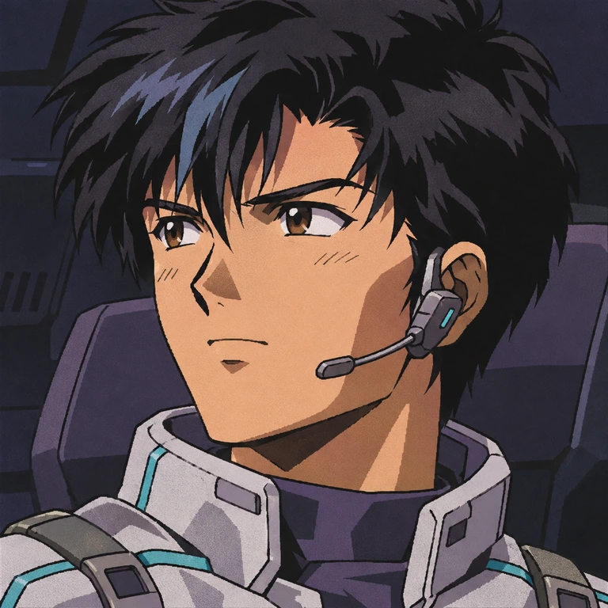

ENCOUNTER COMMUNICATION
在交火之前，
先聽見彼此。
三種對話節奏。相同戰場，不同的首次接觸。
尚未接入主遊戲

戰場構圖示意 · 非實戰畫面
SCENE HOLD
首次接觸

ALLY點「繼續」或按 Space／Enter：先顯示整句，再前進。手機使用下方按鈕。
RECOMMENDED DIRECTION
小兵通訊、Boss 停格，關鍵時刻才做選擇。
一般敵機用 B，避免每次新機種出現都打斷操作；雙環、新怪獸、雙獸用 A。C 留給求生獵手的觀察與回應，讓玩家理解牠的意圖。
CAST & MATERIAL LIBRARY
敵方盤點與頭像素材
四種一般敵機、雙環核心、新怪獸、舊哥吉拉雙獸。人名、AI 語氣與個體分工為本次提案；里程是原劇本鍵值，並非秒數。
素材收集與使用方式
機體小圖收錄自專案現有 img/enemies/a22-*；頭像以內建 ImageGen 分別繪製，統一為原創賽璐璐通訊風格。新怪獸依目前模型臉部參考，藍色下顎與琥珀眼保留。舊雙獸依原有有機體型繪製，未使用已停用的機械 GOZILLA 圖替代。
未下載外部動畫角色或來路不明的角色包。頭像、現有機體圖、對白、提示詞與來源清單均保存在專案的 dialogue-proposals 素材目錄。
下載完整素材包 · 下載素材清單 · 下載全部對白FIRST ENCOUNTER SCRIPTS
逐段對白與分支
展開可閱讀全部台詞。怪獸動作為演出註記，不是替怪獸配上人類語言。